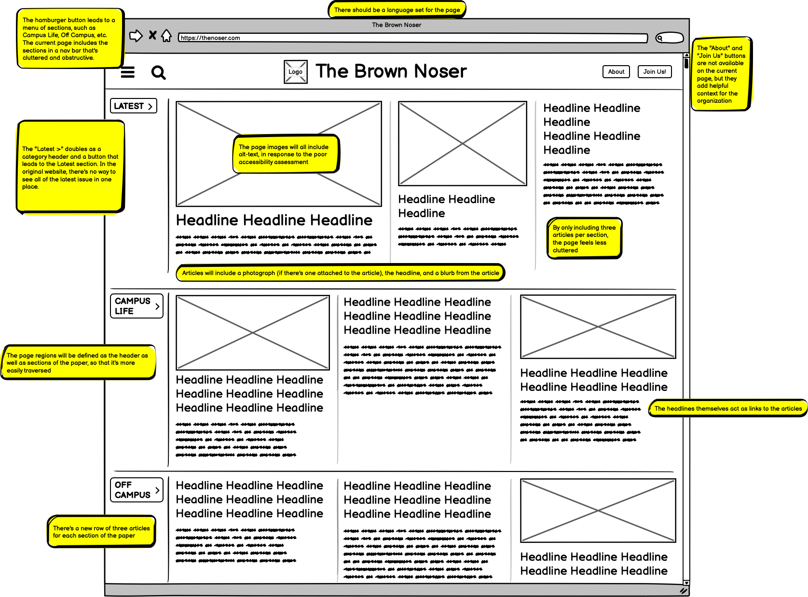
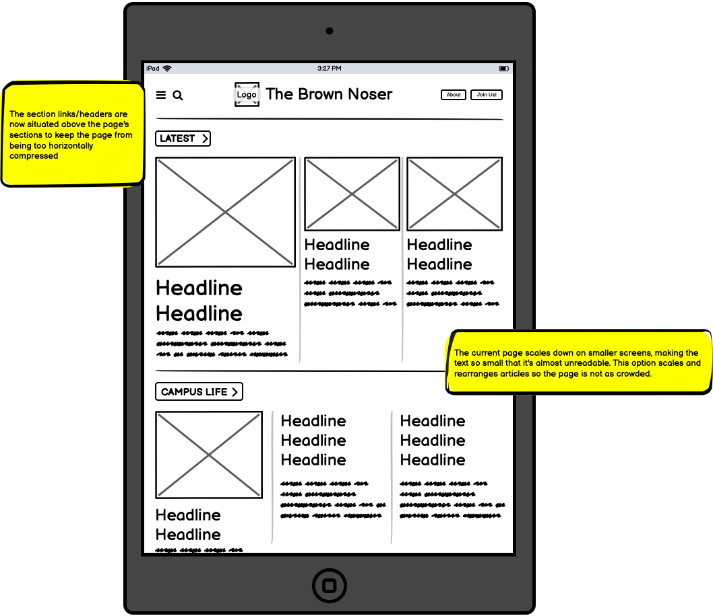
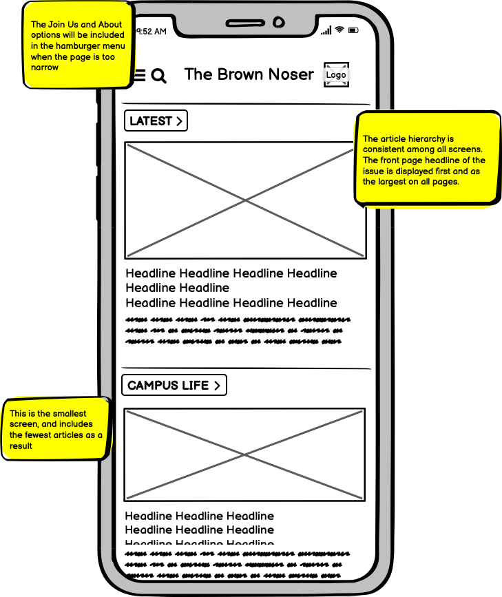
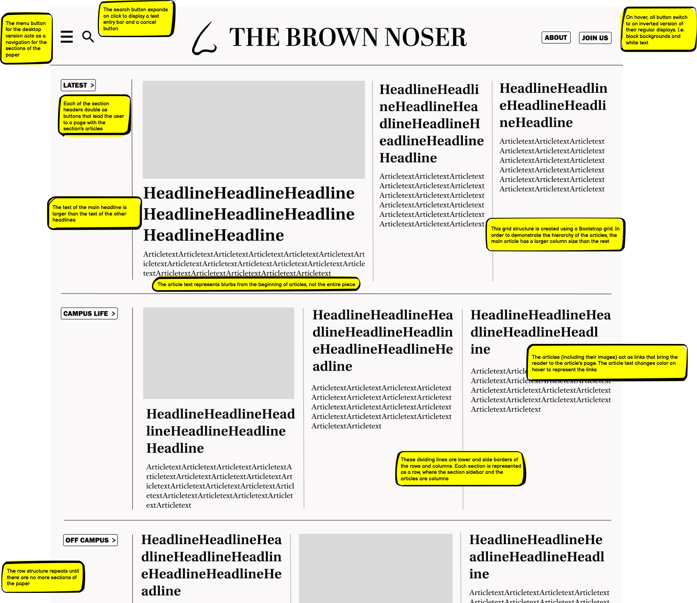
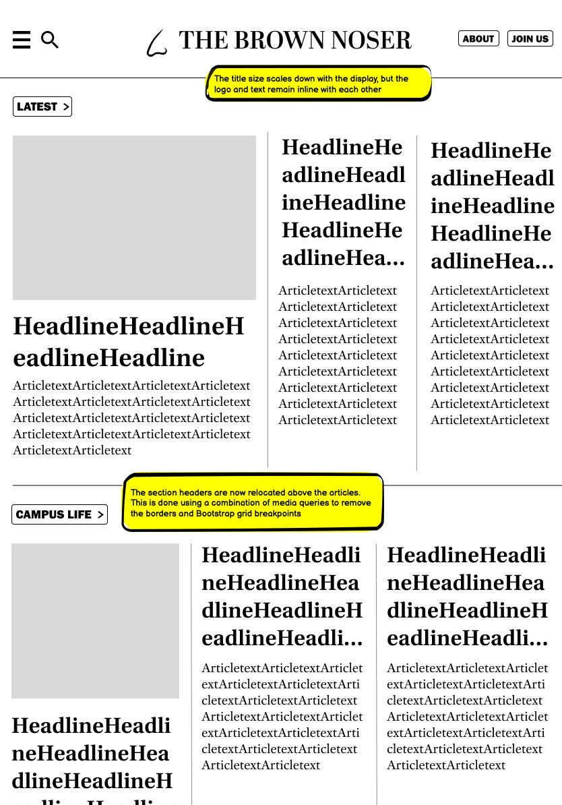
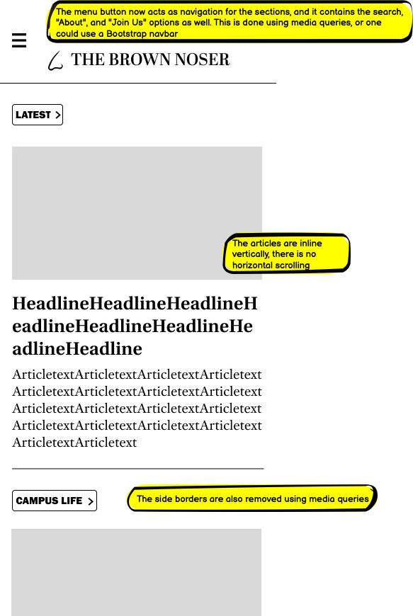

Initial usability issues
Original webpage
I chose to redesign website because it's the website for the satire page of my university, and I spend a fair amount of time on it. Visit the original here
Issues I've noticed:
- The page looks outdated
- The section navigation bar is poorly formatted
- The picture for the main headline (the middle article) is not larger than the other pictures, meaning the page isn’t fully calling attention to the article
- There’s no “about” or “join us” page
- The page is meant to emulate a newspaper, but it looks crowded
- On tablet and phone, the articles don’t reorder on the page. Instead, the text and photos become smaller, and the entire view compresses
The accessibility test revealed that there were some photos missing alternative text, there was no set language, and there were some missing form labels as well. There were also no page regions found. The overall structure of the page was fairly clear, and the hierarchies were consistent from an accessibility standpoint. I would disagree that the hierarchies are as clear from a design standpoint as the main headline isn’t clearly highlighted. Additionally, when the display was the size of a phone, the text was extremely small, which may pose difficulties for users with low vision.
Low-fidelity wireframes
Desktop
Tablet
Phone
Design guide
Reference for prototype

High-fidelity prototypes
Desktop
Tablet
Phone
Final redesign
This is the final product: a restructured, cleaner page. Visit the redesign here